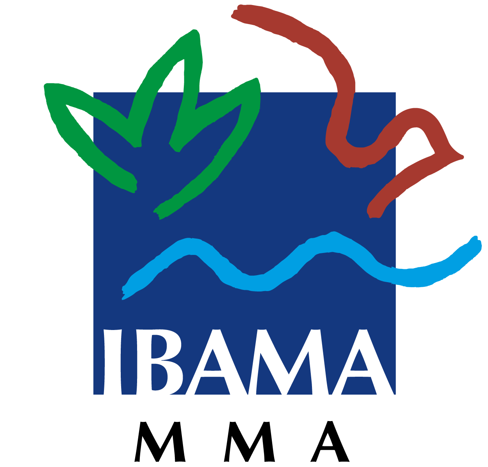
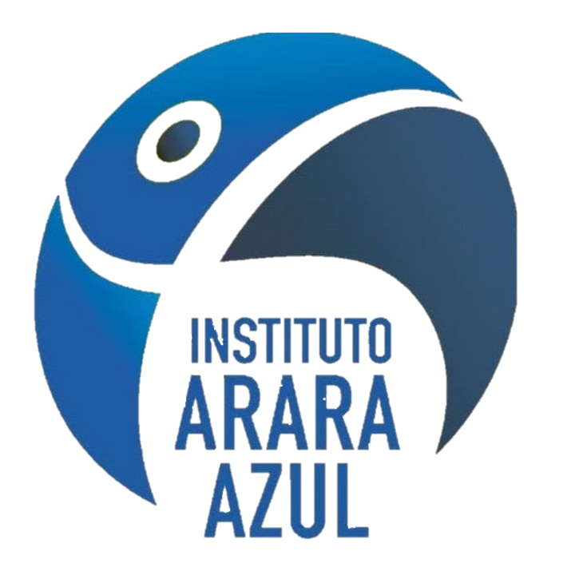

WWF-BRASIL
O WWF-Brasil é uma organização da sociedade civil brasileira, de natureza não-governamental e constituída como associação civil sem fins lucrativos que trabalha para mudar a atual trajetória de degradação ambiental e promover um futuro onde sociedade e natureza vivam em harmonia.
Criado em 1996, o WWF-Brasil mantém 137 funcionários atuando em 67 projetos na Amazônia, Cerrado, Pantanal, Mata Atlântica e Caatinga, além dos ecossistemas marinhos, na costa brasileira.
IBAMA
Em 22 de fevereiro de 1989 foi promulgada a Lei nº 7.735, que cria o Instituto Brasileiro do Meio Ambiente e dos Recursos Naturais Renováveis (Ibama), integrando a gestão ambiental no país. O Ibama, ao longo de sua história, vem dando respostas concretas aos desafios que se colocam. Desde sua criação, em 1989, os temas ambientais vêm alcançando novos espaços no Brasil e no mundo. Já em 1992 foi criado o Ministério do Meio Ambiente e, durante a Conferência das Nações Unidas para o Meio Ambiente e o Desenvolvimento (Rio 92), foram lançadas três das principais Convenções internacionais de meio ambiente: de Mudanças Climáticas, da Diversidade Biológica e da Desertificação. O aprimoramento do arcabouço legal também reflete a importância crescente da agenda ambiental no País. Em 1997 foi aprovada a chamada Lei das Águas; em 1998, a Lei dos Crimes Ambientais; em 1999, a lei que estabelece a Política Nacional de Educação Ambiental; em 2000, a que estabelece o Sistema Nacional de Unidades de Conservação; e em 2006, a Lei de Gestão de Florestas Públicas.
INSTITUTO ARARA AZUL
Criado em 2003, o Instituto Arara Azul, localizado no Pantanal sul-mato-grossense, promove a conservação da arara-azul, da biodiversidade e do Pantanal como um todo, por meio do envolvimento e da conscientização das pessoas para a utilização racional dos recursos naturais.
O Projeto Arara Azul estuda a biologia e relações ecológicas da arara-azul-grande, realiza o manejo e promove a conservação da arara-azul em seu ambiente natural. O Projeto estuda a biologia reprodutiva das araras-vermelhas, tucanos, gaviões, corujas, pato-do-mato e outras espécies que coabitam com a arara-azul no Pantanal. Também compreende o acompanhamento das araras na natureza, o monitoramento de ninhos naturais e artificiais, numa área de mais de 400 mil hectares, além do trabalho de conservação da espécie, em conjunto com proprietários locais. Ao todo, são monitorados 615 ninhos, em 57 fazendas, e 5 mil aves, no Pantanal mato-grossense.